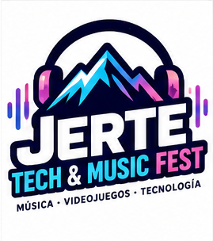
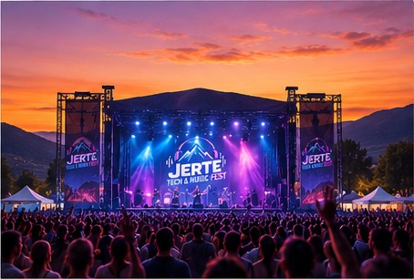
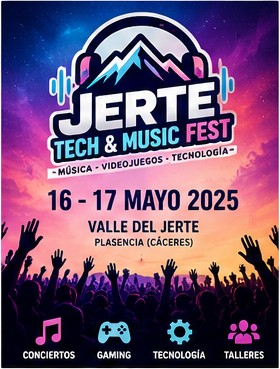

El Jerte Tech & Music Fest nace con la ilusión de convertir el emblemático entorno natural del Valle del Jerte en un punto de encuentro ineludible para la juventud, la creatividad digital y las vanguardias sonoras. Durante todo un fin de semana, fusionamos lo mejor de los conciertos de música electrónica e indie con competiciones de eSports, experiencias inmersivas y talleres tecnológicos orientados al futuro digital.
Creemos firmemente en el poder transformador de la tecnología cuando se combina con la cultura y el respeto por el medio ambiente. Nuestro objetivo es ofrecer un espacio seguro, dinámico e interactivo donde creadores de contenido, aficionados a los videojuegos, estudiantes y amantes de la buena música puedan compartir pasiones, aprender nuevas habilidades y disfrutar de momentos inolvidables rodeados de naturaleza.
Fechas de celebración: 18 y 19 de julio de 2026 en el Recinto Ferial de Cabezuela del Jerte (Cáceres).
En esta edición hemos distribuido el recinto en tres grandes áreas temáticas: la carpa SoundStage, orientada a las actuaciones musicales y espectáculos visuales; la Arena Gaming, dotada con ordenadores y consolas de alto rendimiento; y el espacio TechLab, reservado a charlas breves, stands de robótica y experiencias de realidad mixta.
Tanto si vienes a competir al máximo nivel en consolas como si solo deseas disfrutar de una tarde de festival al aire libre con tus amigos, el Jerte Tech & Music Fest tiene una experiencia diseñada especialmente para ti.
